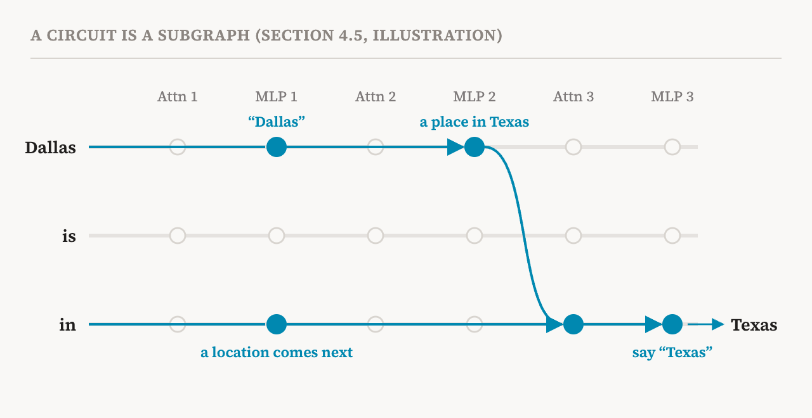
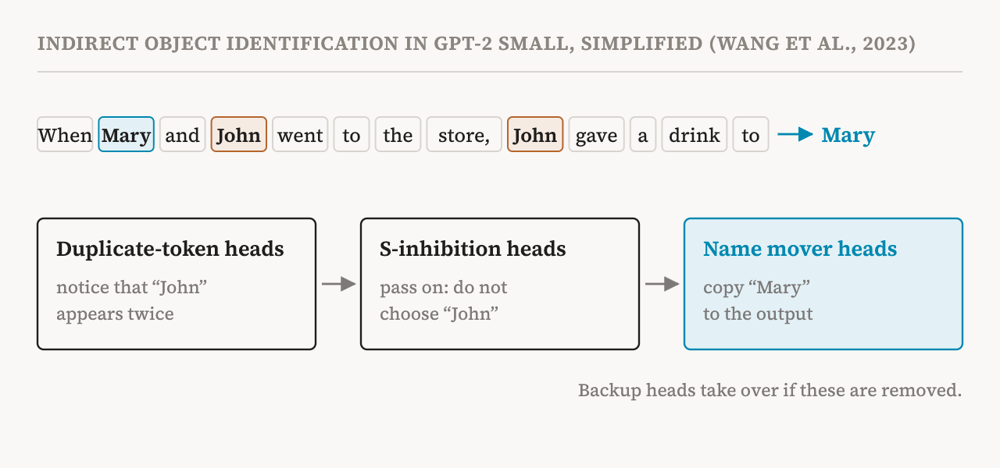

Parts 4 and 5 gave us two kinds of building blocks. One kind is the components a transformer computes with: attention heads and MLPs, reading from and adding to the residual stream. The other kind is the units we use to say what is represented: neurons and, more generally, features. This part puts them together. It covers section 4.5 of the book (pages 25–26), which introduces the idea of a circuit and the two main lines of research on circuits.
Mechanisms and circuits
The book uses the word mechanism for the arrangement inside a model that produces a particular behaviour: the activations, the units that represent things in them, and the transformations applied to them, taken together. Finding and understanding mechanisms is a central goal of mechanistic interpretability.
A common way to describe a mechanism is as a circuit. Imagine drawing out everything a model computes for one input as a graph. Each node is a component, such as the attention module or the MLP of some layer, or a unit of representation, such as a feature. Each arrow shows information flowing from one node to another, or being transformed on the way. Because information only flows forward through the layers, the graph has no loops; in the book's terms it is a directed acyclic graph.
A circuit is a subgraph of that graph: a selection of nodes and arrows that together carry out a particular computation or behaviour. Everything else is left out. The selection then serves as a description of the mechanism.

The idea of leaving things out is the heart of it. A full model has billions of numbers and a huge computational graph. A good circuit says that, for this behaviour, a small part of that graph does the work that matters, and it says what each part does. That is what makes it an explanation people can follow rather than just a copy of the model.
Two examples from the book
The book's box of examples names two kinds of circuit. The first is the induction head circuit: two attention heads in different layers cooperate so that a model can continue a pattern it saw earlier in the same text. If the text contains "Harry Potter" and later "Harry" appears again, an induction circuit helps predict "Potter". This mechanism is thought to underlie much of in-context learning, a model's ability to pick up a pattern from the text in front of it. Part 19 is devoted to it.
The second is the QK circuit, after the query and key vectors of part 4. It describes how the queries and keys of an attention head interact to decide which earlier positions the head prioritises. Studying it explains why a head looks where it looks.
Capability circuits
The book describes two complementary lines of research on circuits. The first, which it calls capability circuit discovery after a 2026 paper by Wu and Barez, looks for the smallest set of architectural components, such as particular attention heads or MLP layers, that is enough to reproduce a given behaviour or capability of the model.
The method begins by defining the capability as a dataset of queries that exercise it. A discovered circuit counts as successful if, keeping only the circuit and removing or neutralising the rest of the model, the model's performance on that dataset is recovered.
The book lists three examples. The first and most famous is indirect object identification in GPT-2 small, a 2023 study. Given a sentence such as "When Mary and John went to the store, John gave a drink to", a language model should continue with "Mary": the person who received something, not the person who gave it. The researchers traced how the model does this and found a circuit of 26 attention heads in seven groups. In simplified form, some heads notice that "John" appears twice, other heads pass that fact along as a signal not to choose the repeated name, and a group of name mover heads copies the remaining name, "Mary", to the output.

One detail of that study connects to part 3. When the main name mover heads were removed, backup heads elsewhere in the model took over and partly restored the behaviour. That is the hydra effect in a concrete case, and it is one reason why measuring what a component does by removing it can be misleading.
The second example is numerical comparison. A 2023 study looked at how GPT-2 completes sentences like "The war lasted from the year 1732 to the year 17", where a sensible continuation is any year after 32, and found the components that make the model prefer larger numbers there. The third is in-context learning, where recent work has traced circuits that let models learn a task from examples in the prompt.
Query-level circuits
The second line of research, which the same 2026 paper calls query-level circuit discovery, asks a different question. Instead of finding the components behind a capability across a whole dataset, it explains how the model reached its answer for one particular input, the query. It traces how internal features interact and pass information through the computational graph until they converge on the final prediction.
These studies usually rely on the tools of the next group of parts. Sparse autoencoders or cross-layer transcoders (parts 10 to 13) automatically break the outputs of MLPs into interpretable features. Researchers then trace how much each feature contributes to the next, and follow the flow of information to the output. A well-known 2025 method of this kind produces what its authors call attribution graphs, one per prompt (part 17).
The two lines complement each other. Capability circuits tell us which components a model generally uses for a task, at the level of heads and layers. Query-level circuits tell us, feature by feature, how a single answer was formed, and can surface reasoning steps inside the model, such as a two-step lookup from a city to its state to the state's capital. Each also has the limits part 3 warned about: a circuit may cover only part of the computation, and it can be hard to show that the circuit found is sufficient, or that it is the only right answer.
The foundations, in one paragraph
With circuits, the book's chapter on foundations is complete. Polysemantic neurons push analysis towards features as more expressive units. Transformer computation describes how representations are transformed and how information is routed through the model. Mechanisms organise those units, transformations and flows of information so that they produce a behaviour, and circuits are how mechanisms are written down. How we interpret all of this depends on assumptions about how models represent and compute, and the book's next chapter, which parts 7 to 9 cover, examines those assumptions one by one.
| Term | Meaning |
|---|---|
| Mechanism | The arrangement of activations, units and transformations that together produce a behaviour |
| Computational graph | All of a model's computation for an input, drawn as nodes and arrows |
| Directed acyclic graph | A graph whose arrows have a direction and never form a loop |
| Circuit | A subgraph of the computational graph that carries out a particular behaviour |
| Induction head | An attention head that helps continue a pattern seen earlier in the text |
| In-context learning | A model picking up a task or pattern from the text it is given, without any change to its weights |
| QK circuit | The interaction between an attention head's queries and keys that decides where it looks |
| Capability circuit discovery | Finding the smallest set of components that reproduces a capability on a dataset |
| Indirect object identification | Choosing the recipient in sentences like "John gave a drink to Mary" |
| Query-level circuit discovery | Tracing how features combine to produce the answer to one particular input |
Next, part 7 examines the first of the book's core hypotheses: that concepts are stored as straight-line directions in activation space.